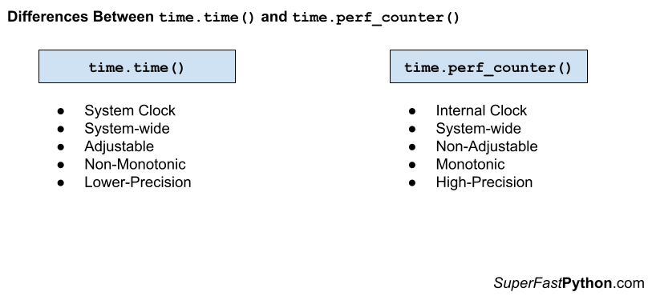

Python time.time() vs time.perf_counter()
You can use the time.time() function to access the system clock and the time.perf_counter() to benchmark Python code.
The time.time() function should no longer be used for benchmarking because it is adjustable, non-monotonic, and lower resolution. Similarly, the time.perf_counter() function should not be used for ad hoc timings such as delays and timeouts because it has a level of precision that is more than is required and may add an unnecessary computational or resource cost.
In this tutorial, you will discover the difference between the time.time() and time.perf_counter() and when to use each in your Python projects.
Let's get started.
What is time.time()
The time.time() function reports the number of seconds since the epoch.
Return the time in seconds since the epoch as a floating point number.
-- time — Time access and conversions
Recall that epoch is January 1st 1970, which is used on Unix systems and beyond as an arbitrary fixed time in the past.
In computing, an epoch is a fixed date and time used as a reference from which a computer measures system time. Most computer systems determine time as a number representing the seconds removed from a particular arbitrary date and time. For instance, Unix and POSIX measure time as the number of seconds that have passed since Thursday 1 January 1970 00:00:00 UT, a point in time known as the Unix epoch.
-- Epoch (computing), Wikipedia
The result is a floating point value, potentially offering fractions of a second (e.g. milliseconds), if the platforms support it.
The time.time() function is not perfect.
It is (theoretically) possible for a subsequent call to time.time() to return a value in seconds less than the previous value, due to rounding.
Note that even though the time is always returned as a floating point number, not all systems provide time with a better precision than 1 second. While this function normally returns non-decreasing values, it can return a lower value than a previous call if the system clock has been set back between the two calls.
-- time — Time access and conversions
This may make the time.time() method of benchmarking code appropriate for code that has a generally longer execution time (e.g. seconds) rather than short execution times, e.g. less than a second or less than 500 milliseconds.
You can learn more about the time.time() function in the tutorial:
Now that we are familiar with time.time(), let's take a look at time.perf_counter().
What is time.perf_counter()
The time.perf_counter() function reports the value of a performance counter on the system. It does not report the time since epoch like time.time().
Return the value (in fractional seconds) of a performance counter, i.e. a clock with the highest available resolution to measure a short duration. It does include time elapsed during sleep and is system-wide.
-- time — Time access and conversions
The returned value is in seconds with fractional components (e.g. milliseconds and nanoseconds), providing a high-resolution timestamp.
Calculating the difference between two timestamps from the time.perf_counter() allows high-resolution execution time benchmarking, e.g. in the millisecond and nanosecond range.
The timestamp from the time.perf_counter() function is consistent, meaning that two durations can be compared relative to each other in a meaningful way.
The difference is not wall clock time.
The time.perf_counter() function was introduced in Python version 3.3 with the intended use for short-duration benchmarking.
perf_counter(): Performance counter with the highest available resolution to measure a short duration.
-- What’s New In Python 3.3
The perf_counter() function was specifically designed to overcome the limitations of other time functions to ensure that the result is consistent across platforms and monotonic (always increasing).
To measure the performance of a function, time.clock() can be used but it is very different on Windows and on Unix. [...] The new time.perf_counter() function should be used instead to always get the most precise performance counter with a portable behaviour (ex: include time spend during sleep).
-- PEP 418 – Add monotonic time, performance counter, and process time functions
For accuracy, the timeit module uses the time.perf_counter() internally.
The default timer, which is always time.perf_counter().
-- timeit — Measure execution time of small code snippets
You can learn more about the time.perf_timer() function in the tutorial:
Now that we are familiar with the time.time() and time.perf_counter(), let's compare and contrast each.
Comparison of time.time() vs time.perf_counter()
Now that we are familiar with the time.time() and time.perf_counter() functions, let's review their similarities and differences.
Similarities Between time.time() and time.perf_counter()
The time.time() and time.perf_counter() functions are very similar, let's review some of the most important similarities.
- Both time.time() and time.perf_counter() functions are part of the time module. This module is concerned with time-related functions.
- Both time.time() and time.perf_counter() report the current time of an internal clock. The time.time() function reports the time since epoch and the time.perf_counter() reports the time using a high-precision timer.
- Both time.time() and time.perf_counter() can be used for benchmarking. We can use either function to benchmark Python statements, functions, and entire programs.
- Both time.time() and time.perf_counter() are system-wide. This means that different programs calling the same functions will access consistent times.
Differences Between time.time() and time.perf_counter()
The time.time() and time.perf_counter() are also quite different, let's review some of the most important differences.
- Adjustable. The clock used by time.time() is adjustable whereas the clock used by time.perf_counter() is not adjustable.
- Monotonic. The times returned by time.time() are not monotonic whereas the times returned by time.perf_counter() are monotonic.
- Precision. The times returned by time.time() may have relatively lower precision whereas the times returned by time.perf_counter() may have higher relative precision.
Let's take a closer look at these differences in turn.
Adjustable
A clock is adjustable if it can be changed at any time.
The system clock is adjustable because it may be updated and changed to a new time.
adjustable: True if the clock can be changed automatically (e.g. by an NTP daemon) or manually by the system administrator, False otherwise
-- time — Time access and conversions
This may be for many reasons, such as:
- Synchronization with a time server (called an NTP server)
- Adjustment for daylight savings (e.g. the start or end).
- Adjustment for leap seconds.
- Adjustment manually in system settings.
The time.time() function returns times based on the system clock. The system clock is adjustable. This means times have the potential to be very different from one call to time.time() to the next.
The clock used by the time.perf_counter() is not adjustable.
Monotonic
Monotonic is a mathematical term used to describe the values returned from a function.
A function is monotonic if the output values only ever increase with the increase of the input values.
In mathematics, a monotonic function (or monotone function) is a function between ordered sets that preserves or reverses the given order.
-- Monotonic function, Wikipedia.
A clock is monotonic if each time we retrieve a time it is greater than (or perhaps equal to) the previous time that was retrieved.
This is related to whether a clock is adjustable. For example, an adjustable clock is always a non-monotonic clock, and vice versa, a non-adjustable clock returns monotonic times.
monotonic: True if the clock cannot go backward, False otherwise
-- time — Time access and conversions
The time.perf_counter() returns monotonic times, meaning that each time the function is called, a time is returned that is greater than or equal to the last time that was retrieved.
The time.time() function is not monotonic, meaning that it may report times in the past relative to times that have already been returned.
Precision
Precision refers to the number of ticks or changes to a clock in a given interval.
A clock with a higher precision will be able to measure more ticks in an interval than a lower precision clock.
The precision of the various real-time functions may be less than suggested by the units in which their value or argument is expressed.
-- time — Time access and conversions
The precision of the time.perf_counter() function may be relatively higher than the precision of clocks used by other time functions in the time module, such as the time.time() function.
Return the value (in fractional seconds) of a performance counter, i.e. a clock with the highest available resolution to measure a short duration.
-- time — Time access and conversions
It is not guaranteed that the time.perf_counter() function will have higher precision than time.time(), but if a clock with higher precision (perhaps higher than the system clock) is available on the platform, then the time.perf_counter() function will make use of it.
Note that "precision" is different from "resolution" or the number of decimal places in times returned by the clock. Resolution may be referred to as "precision" in the context of computer science and the representation of floating point values, e.g. the precision of a floating point value. This is confusing.
In computer science, the precision of a numerical quantity is a measure of the detail in which the quantity is expressed. This is usually measured in bits, but sometimes in decimal digits.
-- Precision (computer science)
Different clocks may also have different resolutions, as well as different precision.
Summary of Differences
It may help to summarize the differences between time.time() and time.perf_counter().
time.time()
- Adjustable, meaning the underlying clock may be changed at any time.
- Non-monotonic, meaning it may return times from the past.
- Lower Precision, meaning it may use a clock with fewer ticks per time interval than other clocks.
time.perf_counter()
- Non-adjustable, meaning the underlying clock cannot be changed.
- Monotonic, meaning that each time returned will always be equal or greater than the last time returned.
- Higher precision, meaning it may use a clock with more ticks per time interval than other clocks.
The figure below provides a helpful side-by-side comparison of the key differences between time.time() and time.perf_counter().

When To Use time.time() and time.perf_counter()
When should you use time.time() and when should you use time.perf_counter(), let's review some useful suggestions.
When to Use time.time()
- When we need to report the system time, e.g. consistent with another program.
- When the program runs in an environment before time.perf_counter() was developed, e..g prior to Python v3.3.
Don't Use time.time() for Benchmarking
Generally, the time.time() function should no longer be used to benchmark Python code.
This is for 3 main reasons:
- The clock used by time.time() is adjustable.
- The clock used by time.time() is non-monotonic.
- The clock used by time.time() may have relatively lower precision.
An alternative function should be used, such as the time.perf_counter() function.
When to Use the time.perf_counter()
- When you need a high-precision timer for benchmarking Python code.
Don't Use time.perf_counter() for Ad Hoc Timing
The clock that underlies time.perf_counter() may be high-precision.
This may mean there is an additional computational or resource cost in accessing the clock.
Therefore, the time.perf_counter() function should only be used where a high-precision clock is required, such as benchmarking.
It probably should not be used for measuring timeouts and delays.
Another lower-resolution monotonic and non-adjustable time function can be used for these purposes, such as time.monotonic().
You can learn more about the time.monotonic() function in the tutorial:
Takeaways
You now know the difference between time.time() and time.perf_counter() and when to use each.